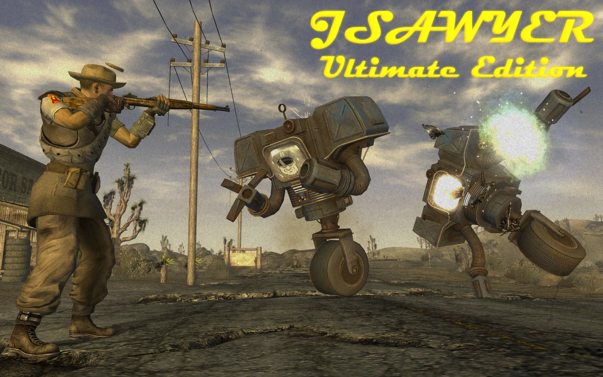
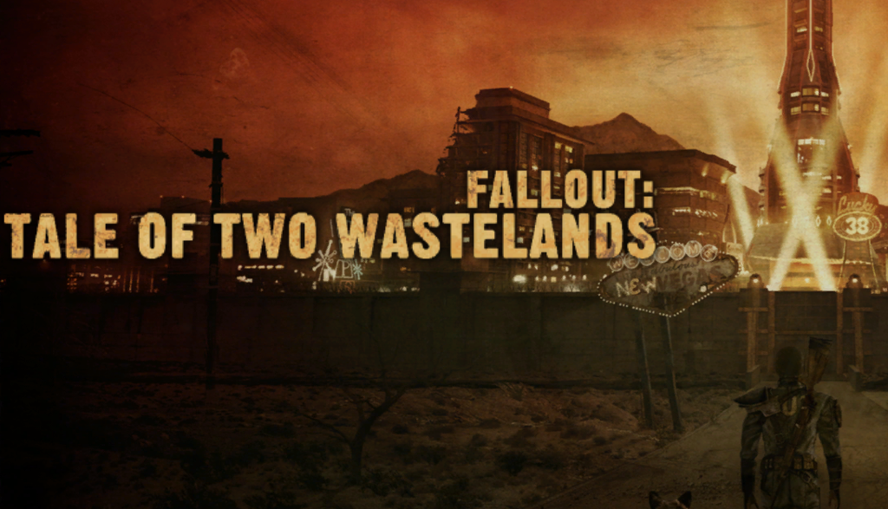
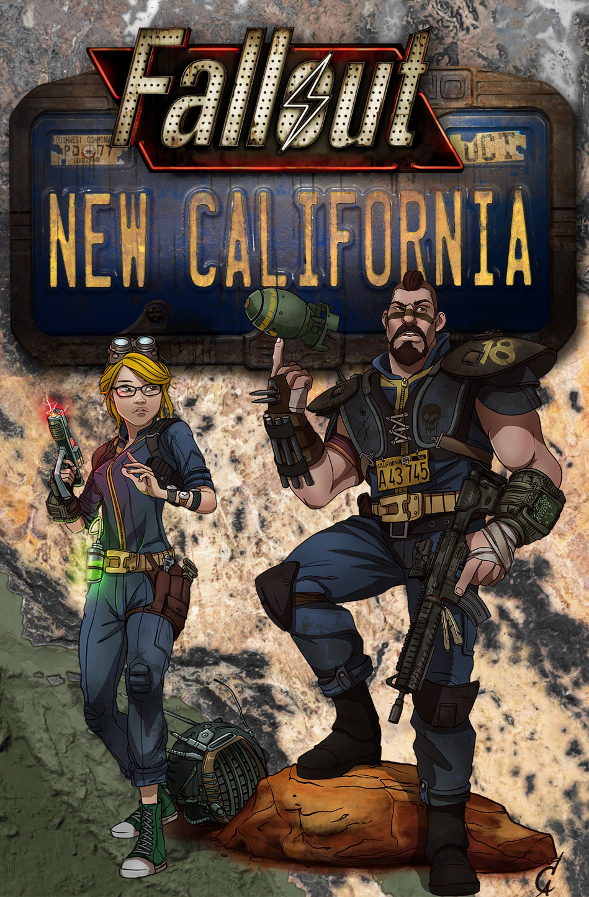
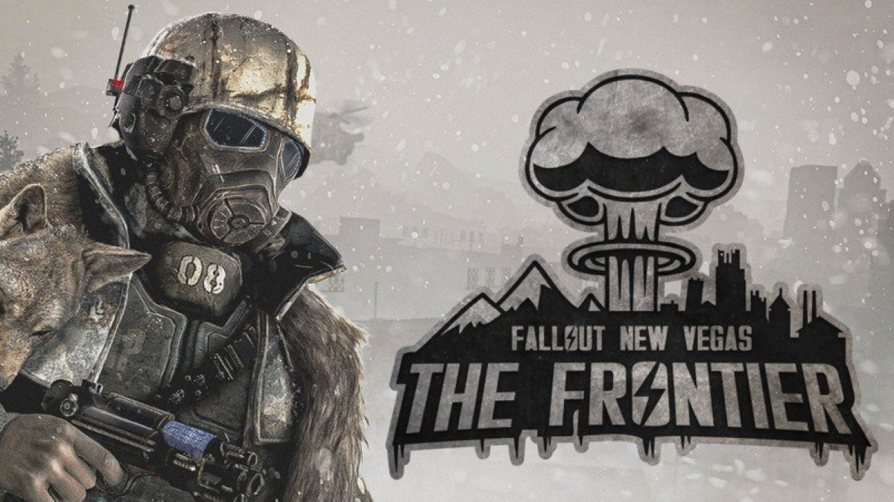

Fallout: New Vegas is a 2010 action role-playing game developed by Obsidian Entertainment and published by Bethesda Softworks. It was announced in April 2009 and released for PlayStation 3, Windows, and Xbox 360 on October 19, 2010. A spin-off of the main Fallout series, the game is set in a post-apocalyptic open-world environment that encompasses a region consisting of parts of Arizona, California, and Nevada. It is set in a world that deviated onto an alternate timeline thanks to Atomic Age technology, which eventually led to a global nuclear apocalypse in the year 2077 in an event referred to as "The Great War", caused by a major conflict between the U.S. and China over natural resources. The main story of New Vegas takes place in the year 2281, four years after the events of Fallout 3 and 204 years after the bombs fell. It is not a sequel but does feature the return of several elements found in Fallout 2.
Players take control of a character known as the Courier. While transporting a package across the Mojave Desert to the city of New Vegas (built in the ruins of Las Vegas), the Courier is ambushed, robbed of the package, shot, and buried in a cemetery. Rescued and nursed back to health by the inhabitants of a small frontier town, the Courier then begins a journey to find their would-be killer and recover the package, makes friends and enemies among various warring factions, and ultimately becomes caught up in a conflict that will determine who controls New Vegas and the Mojave Wasteland.
It was a commercial success, shipping more than 5 million copies, and is estimated to have sold around 12 million copies worldwide. The game received a Golden Joystick Award for "RPG of the Year" in 2011, nominated for two BAFTA Awards (Best Strategy Game and Best Story), received an Interactive Achievement Award nomination for "Role-Playing/Massively Multiplayer Game of the Year", as well as a NAVGTR Award for Supporting Performance in a Drama (Felicia Day). At launch, New Vegas received positive reviews, with critical praise for the game's writing, quests, and improved gameplay, though it was criticized for its glitches and bugs at the time. It has since obtained retrospective acclaim and a cult following, with some critics referring to the game as the best in the Fallout series as well as one of the greatest RPGs of all time.
While gameplay from Fallout 3 was retained for Fallout: New Vegas, Obsidian Entertainment worked on improving existing gameplay elements while introducing some old and new features to the series. Combat was improved upon, with the V.A.T.S. system being updated with several new attacks, and several new kill animations were added for melee weapons. Weapons' response and accuracy were also refined. Players can use the iron sights on firearms, with the exception of certain larger guns and some energy weapons. The third-person perspective in the game was redesigned to be more "over the shoulder" than it had been in Fallout 3. Character creation was refined to take less time than Fallout 3, with players able to skip the tutorials and proceed across the Wasteland once their character is set up. Players may make any last-minute changes to their character when they step beyond the boundaries of the starting location of Goodsprings. More Perks were added to the game to provide greater options for improving the player's character upon leveling up, and Perks that only added to skill values were removed. The player can only take one Perk every two levels instead of every level like in Fallout 3, in an attempt to prevent players from becoming too strong early in the game. More weapons were added to the game, including the 9mm Pistol, the Single Shotgun, Powder Charges, Dynamite, Trail Carbine, and Grenade Launcher, with each weapon added being intended to serve a specific and tactical role within the game.
The "Big Guns" and "Small Guns" skills are consolidated into one skill, "Guns", and the skill of Survival was added, adapted from the first and second game's Outdoorsman skills. In New Vegas, this skill affects how much health is restored by food and drink. Skills have a larger effect on conversation choices; whether a dialogue option will succeed or fail is shown upfront, and entirely dependent on Skill level, rather than both skill and chance as was the case in Fallout 3. Players can receive a temporary boost to a skill by reading a skill magazine corresponding to it, which can be found around the Mojave Wasteland, the effects of which can be further enhanced by certain Perks. Players can gamble by visiting casinos across the Wasteland and purchasing chips with one of the three currencies available. Casinos offer blackjack, slots, and roulette, and players' success rate is dependent on their Luck stat. Players can also play a card game called Caravan, which was specifically designed for the game and has its own rules and can be played with certain people outside of the casinos.
Crafting in New Vegas was expanded to allow the creation of food, drink, drugs, ammunition along with unique weapons. Crafting can be done at workbenches, reloading benches, hot plates, and campfires, and requires specific components as well as a sufficient skill level; for instance, cooking food at campfires requires the player to have a sufficient Survival skill level to do so, and may require plants that can be harvested across the Wasteland. Some special items cannot be made until their recipes or schematics are found. In addition to crafting, players can modify weapons with special firearm modifications, which may improve their rate of fire and magazine size or add sights to allow for greater range and accuracy. Some modifications must be scavenged in the Wasteland or purchased from vendors.
Because of the large number of factions created for the game, developers reintroduced the reputation system that was first used in Fallout 2 and had been absent in Fallout 3. Much like the Karma system, which tracks a player's "good" and "bad" deeds, a player's standing with a faction or settlement can change depending on how they interact with them and what decisions they make. For example, if a player helps a faction or settlement, their reputation improves in all locations controlled by that faction or settlement; opting to kill their members or citizens or work against them will cause a gain of infamy with that faction or settlement. Unlike the Karma system, any reputation fame or infamy gained is permanent and irreversible, besides the NCR and Legion resetting infamy upon reaching a certain point in the game, and fame and infamy are completely separate values. The type of reputation the player has with each faction or settlement affects how non-player characters (NPCs) behave towards them; a good reputation might make completing some quests easier, provide discounts with the faction or settlement's vendors, and cause faction members to offer gifts; a bad reputation may lead to the faction refusing to help the player, attacking them on sight, or sending assassins to gun them down.
Companions in New Vegas received far more depth than the companions from Fallout 3, through the use of the Companion Wheel and most companions offering a unique questline. Through the Wheel, players can switch a companion's tactics in combat, including their behavior and how they attack, as well as dismiss them, treat them for injuries, access their inventory, and talk with them. Players may have two companions with them at any one time one humanoid and one non-humanoid. Companions can confer a unique Perk or advantage, which can be improved by completing a special quest related to them. They can also be sent directly to the Lucky 38 Presidential Suite upon being dismissed rather than returning to their original location. Each companion was intended to represent a different style of combat. There are a total of eight permanent companions, with six more companions available only in their respective DLC worlds.
New Vegas introduced the additional difficulty of Hardcore mode, which delivers more realism and intensity to the playing environment. While the standard adjustable difficulty level settings only affect combat difficulty, Hardcore mode adds statistics and encourages the player to consider resource management and combat tactics. Game director Josh Sawyer stated that the mode was inspired by several different Fallout 3 mods. In this mode, the following occurs: All healing items, including food and water, do not heal the player instantly but work over a short period of time. RadAway takes time to gradually decrease radiation poisoning, rather than instantly. Stimpaks can no longer heal crippled limbs, and players must instead use Doctor's Bags, sleep in an owned or rented bed, use the chem Hydra, or visit a doctor to heal limbs. Ammunition has weight, limiting the amount that can be carried. Players must eat, drink, and sleep in order to avoid starvation, dehydration, and exhaustion, respectively; failure to do so confers a steady decrease in certain skills and eventually leads to death if untreated. Companions can be killed upon being reduced to zero hit points, rather than losing consciousness.
Fallout: New Vegas takes place during the year 2281 in the region around the former city of Las Vegas (now the city-state "New Vegas"), around four years after the events of Fallout 3 and 204 years after the Great War of 2077. Three major powers seek control: the New California Republic (NCR), Caesar's Legion, and Robert House (voiced by René Auberjonois). The NCR has become overextended and mismanaged, but their expansion eastwards has gained them control of the majority of the Mojave, with their only threat coming from the slave-driving, Roman army-styled forces of Caesar (voiced by John Doman), who have subjugated eighty-six tribes further east and plan to conquer New Vegas. Four years earlier, the NCR won a narrow victory over Caesar's Legion for control of the Hoover Dam and its supply of clean water and power. As both sides prepare for an inevitable second conflict over the dam, mysterious businessman Mr. House presides over New Vegas with an army of "Securitron" security robots. He also seeks control of the dam and to advance his own plans for the region.
Much of the game takes place in the Mojave Wasteland encompassing parts of the former states of California, Nevada, and Arizona. Along with the three main factions, minor ones include the Boomers, a heavily armed xenophobic tribe at Nellis Air Force Base; the Powder Gangers, escaped convicts from a Correctional Facility near Primm; the Great Khans, a tribe of drug dealers descended from the New Khans in Fallout 2; and the Brotherhood of Steel, remnants of the U.S. Army who aim to secure harmful technology. Additional landmarks include vaults, Black Mountain, and the HELIOS One solar energy plant.
The protagonist is a courier working for the Mojave Express postal service. The game begins as The Courier awakens in the town of Goodsprings after being shot and left for dead by mobster and casino owner Benny (voiced by Matthew Perry) and his goons. They have robbed The Courier of the "Platinum Chip" which The Courier was to have delivered to New Vegas. The Courier is dug out of a shallow grave by Securitron Victor (voiced by William Sadler) and nursed back to health by physician Doc Mitchell (voiced by Michael Hogan). The Courier's main quest is to locate Benny and retrieve the Platinum Chip. Along the way The Courier encounters additional quests involving individuals and groups whom The Courier can choose to assist, ignore, or sabotage, gaining or losing karma and affecting the course of the game.
In 2004, Bethesda Softworks purchased the license to develop and publish Fallout 3, as well as an option to create two sequels, from Interplay Entertainment. Three years later they bought the Fallout intellectual property. Bethesda abandoned the original gameplay style of previous Fallout titles; instead of an isometric game with action point/turn-based combat, Bethesda's Fallout 3 was a fully 3D game with real-time combat as well as the action point-based V.A.T.S. system.
Fallout 3 was a critical and commercial success upon its release in 2008, and Bethesda commissioned a sequel. With their own developers busy working on The Elder Scrolls V: Skyrim, Bethesda reached out to Obsidian Entertainment, a company founded by several former members of Interplay's original Fallout developers Black Isle Studios, to develop the game. Bethesda and Obsidian decided to create a game that would continue the "West Coast" story rather than the plot of Fallout 3. Bethesda rejected Obsidian's idea to set the game between the events of Fallout 2 and Fallout 3, but they did approve of setting the game in Las Vegas.
Fallout: New Vegas was announced in April 2009. Obsidian's development team included former Interplay/Black Isle employees Josh Sawyer as director, and Chris Avellone as a writer and director of the game's downloadable content. The plot of New Vegas takes heavy inspiration from the original Fallout 3 that Black Isle developed, commonly known by its codename "Van Buren", which Sawyer also directed prior to its cancellation. The most notable example is the inclusion of Caesar's Legion, a faction originally created for Van Buren. Obsidian included other factions from previous Fallout games and avoided writing any faction as entirely good or evil, but instead as potential rivals depending on what path the player decided to pursue.
The game had a somewhat short development cycle of 18 months. New Vegas reuses the Gamebryo engine used in Fallout 3, yet it improved on the previous installment's source code, with some graphics rendering improvements and new art assets, while reworking the engine to accommodate the extra lights and effects of the Las Vegas Strip. Obsidian were unfamiliar with the Gamebryo engine and had to request the help of an Oblivion modder named Jorge Salgado. Obsidian refined the real-time shooting mechanics and added iron-sights aiming to make playing without V.A.T.S. a more viable option than it was in Fallout 3. One PC version of the game relies on Steamworks for online functions, such as achievements and cloud save storage, as well as digital rights management (DRM). A version without DRM was made available by GoG.com on June 1, 2017.
Producer Jason Bergman announced the involvement of several actors, including Ron Perlman as the game's narrator and Wayne Newton as radio DJ "Mr. New Vegas". He confirmed that the game would include voice acting from Matthew Perry, Zachary Levi, Kris Kristofferson, Danny Trejo, Michael Dorn and Felicia Day. The team brought on casting director and voice producer Timothy Cubbison to oversee the actor selection and voice production.[citation needed] The game established the new record for the most lines of dialogue in a single-player action role-playing game. New Vegas contains around 65,000 lines of dialogue, beating its predecessor and previous record holder Fallout 3 which contained 40,000 lines of dialogue.
Fallout 3 composer Inon Zur composed the score. It features three major in-game radio stations, spanning several genres of music in the radio waves: country, bluegrass, popular music from the 1940s and 1950s, jazz and classical. Each station has a set track list which repeats randomly. Music from the first two Fallout games, composed by Mark Morgan, is used in the game as well.
On February 4, 2010, Obsidian Entertainment released the Fallout: New Vegas teaser trailer. A second trailer was shown on GameTrailers from E3 on June 11, 2010.
Bethesda announced four pre-order bonus packs giving specific in-game items, they include the "Classic", "Tribal", "Caravan" and "Mercenary" packs available when pre-ordering at specific outlets, all of the listed pre-order packs were later made available for purchase on September 27, 2011. The Collector's Edition was revealed on May 11, 2010. It was distributed worldwide and is available for Microsoft Windows, PlayStation 3, and Xbox 360. Its enclosed contents include seven real clay poker chips from the Fallout: New Vegas casinos, a deck of cards each with a character on them with information on that person, a graphic novel leading up to the events of New Vegas, a Lucky 38 large Platinum Chip replica, and a making-of documentary.
Fallout: New Vegas was released for Microsoft Windows, PlayStation 3, and Xbox 360 on October 19, 2010, in North America, October 21, 2010, in Australia, and October 22, 2010, in Europe. Within hours of the game's release on October 19, 2010, players of Fallout: New Vegas began reporting a variety of technical issues (saved games becoming corrupted, the game freezing, players becoming stuck within the terrain, and random NPCs appearing behind the player, initiating combat out of context). Bethesda Game Studios stated that they, in conjunction with Obsidian, were actively working on an update for release "as soon as possible" to address in-game issues. They urged customers to keep their copies of New Vegas rather than return them to stores, stating that providing the best possible experience to their users was a priority.
Within a week of the original release, a patch was available for the PC, Xbox 360, and PlayStation 3 versions of the game, which contained over 200 quest and scripting-related fixes. The update, released on December 14, 2010, has fixed further glitches and save game problems, including companion-related bugs. Subsequent updates were released in February and April that corrected numerous bugs and gameplay issues. A patch released on July 5, 2011, causes the game to automatically create a save prior to the endgame sequence, allowing single-save players to play through the downloadable content without creating a new game. The user community has created community patches to fix some remaining issues.
The game engine has had major performance issues on the PlayStation 3, leading to unplayable frame rates when the save game file becomes large following extended play, or sometimes when downloadable content is installed. Similar issues plagued The Elder Scrolls V: Skyrim, but a performance patch to improve New Vegas was not implemented. Sawyer stated that the issue involves the core engine and cannot be patched easily.
On October 18, 2010, Bethesda Softworks announced that downloadable content (DLC) would be available for New Vegas, in keeping with its predecessor Fallout 3. Six add-on packs have been released. The six add-ons are titled Dead Money, Honest Hearts, Old World Blues, Lonesome Road, Gun Runners' Arsenal, and Courier's Stash. The combined effect of the DLC is to raise the level cap from 30 to 50.
The first add-on pack was released for the Xbox 360 on December 21, 2010, and for PlayStation 3 and PC (via Steam) on February 22, 2011. In Dead Money, the Courier is captured by an insane former elder of the Brotherhood of Steel known as Father Elijah and is forced to work alongside three other captives to stage a heist on the Sierra Madre Casino and retrieve its fabled treasure which had been long concealed from the rest of the world by a deadly toxic cloud. The pack adds achievements/trophies, weapons, perks, terrain, enemies, crafting recipes and decisions for the player, as well as raising the level cap by five. It is the only one of the four story add-ons that cannot be revisited after the completion of its main quest line.
The second pack was released on May 17, 2011, on Xbox Live and Steam and June 2, 2011, on the PlayStation Network due to the April–May outage. In Honest Hearts, the Courier takes part in a trading expedition to Utah's Zion National Park by signing on with The Happy Trails Caravan which is very soon attacked and destroyed by tribal raiders. Surviving the attack and stranded in Zion, the Courier becomes involved in a conflict between the local tribes with one side led by "New Canaanite" (post-apocalyptic incarnation of Mormonism) missionaries. One of the missionaries is revealed to be the widely-feared and widely-revered "Burned Man," Caesar's Legate who preceded Lanius, and who had lost the First Battle of Hoover Dam. As punishment, he was covered in pitch, set on fire, and thrown into the Grand Canyon only to survive and hence be known as the Burned Man. The pack adds achievements/trophies, crafting recipes, perks, terrain, items, enemies and decisions for the player, as well as raising the level cap by five.
In Old World Blues, the Courier is abducted and unwittingly becomes a lab rat in a science experiment gone awry who soon discovers how some of the Mojave's mutated creatures and dangerous technology came to exist. Old World Blues takes place in the Pre-War research centers of Big Mountain, known colloquially as "the Big Empty" or "Big MT." The Courier could choose to either turn on their kidnappers or join with them in their long-standing struggle against a greater threat. This pack adds achievements/trophies, items, perks, a vast area to explore, and raises the level cap by five like the previous two packs. Old World Blues was released on July 19, 2011.
In Lonesome Road, the Courier is contacted by Ulysses, a former Legionary and Mojave Express courier who, upon seeing the Courier's name on the list of possible package handlers, refused to deliver the Platinum Chip that ultimately led to the attack on the Courier in the beginning of the base game. Ulysses was a character whose involvement in the story had been hinted since New Vegas' initial release; Lonesome Road concludes his story as well as that of the Courier. This pack adds achievements/trophies, items, perks, decisions, enemies and crafting recipes. Initially, Lonesome Road was planned to be released in August 2011; however, the add-on was delayed until September 20 for unspecified reasons.
On September 27, 2011, Bethesda released two content packs titled Gun Runners' Arsenal and Courier's Stash. Gun Runners' Arsenal adds various weapons (like the Katana, Time Bomb, and Chainsaw) and weapon mods (like suppressors, scopes, laser sights, and stacked magazines) along with new ammo types, which can be found throughout the game world. Courier's Stash contains all bonus content that was previously only available for pre-ordering the game (the "Caravan Pack", "Classic Pack", "Mercenary Pack" and "Tribal Pack").
On November 3, 2011, Bethesda announced Fallout: New Vegas Ultimate Edition, which includes the game and all of its downloadable content. It was released worldwide throughout February 2012. It was released on February 7, 2012 in North America and February 10 for Europe.
Like most Bethesda games, Fallout: New Vegas features a very large modding community with several high-profile mods and well-known modders.
On December 29, 2011, Fallout: New Vegas director Josh "J.E." Sawyer released an unofficial mod for the PC version. The mod adjusts the maximum level to 35, halves the rate of increase in player experience points, reduces base player health, reduces the base weight a player can carry, defines certain characters as good or evil rather than neutral, and makes various other adjustments. These are changes that Sawyer wanted to be included in the game, but they were not released as an official update. This mod requires all add-on packs to work.
Tale of Two Wastelands is a total conversion mod for Fallout: New Vegas that merges the entire content of Fallout 3 and its DLC and New Vegas into one game. The mod implements features introduced in New Vegas into Fallout 3, such as the Companion Wheel, crafting recipes, and weapon mods. Players can freely traverse between the two games on a single save file, keeping all of their items and their progression between game worlds.
Main article: Fallout: New California Fallout: New California (originally named Project Brazil) is a massive fan-made overhaul mod for Fallout: New Vegas by Radian-Helix Media, adding an all-new feature-length campaign and world space, complete with voiced characters, quests, companions, factions, and multiple endings, set in the California Wastelands of the San Bernardino Mountains.
Fallout: The Frontier is a massive fan-made overhaul mod for Fallout: New Vegas set in the ruins of Portland, Oregon, under nuclear winter. It features a game-length campaign with three questlines, with full voice acting. It was released on Nexus Mods on January 15, 2021, with a planned release on Steam being delayed one week. Shortly after launching, the website for Nexus crashed.
The mod was briefly pulled after one of its developers was found to have created "animated paedophilic content" and was later re-released with changes to address the criticism (mainly removing all content by the former developer, most of which were icons for in-game perks and items). Other controversies surrounding the mod include scenes implying zoophilia, the ability to enslave an 18-year old woman, a lack of coherence with the established Fallout universe, and themes that some critics asserted were depictions of the developers' "barely disguised fetishes".
Fallout: New Vegas received "generally favorable reviews" from critics, according to review aggregator Metacritic. Critics praised the gameplay improvements and expanded content over Fallout 3, while criticizing familiarity and technical issues. By November 8, 2010, the game had shipped 5 million copies worldwide, achieving revenue of $300 million (~$395 million in 2022). Electronic Entertainment Design and Research, a market research firm, estimates that the game had sold 11.6 million copies worldwide by 2015.
IGN's Keza MacDonald praised the game's script, but criticized the character models and facial animation as "wooden and unbelievable". Eurogamer commented that "Obsidian has created a totally compelling world and its frustrations pale into insignificance compared to the immersive, obsessive experience on offer. Just like the scorched scenery that provides its epic backdrop, New Vegas is huge and sprawling, sometimes gaudy, even downright ugly at times – but always effortlessly, shamelessly entertaining."[96] According to GameSpot's Kevin VanOrd, the game's "familiar rhythm will delight fans of the series, and the huge world, expansive quests, and hidden pleasures will have [the players] itching to see what other joys you might uncover. However, as time wears on, the constant glitches invade almost every element of the game and eventually grow wearisome."
Giant Bomb's Jeff Gerstmann reviewed Fallout: New Vegas for the Xbox 360 positively, despite its many crashes, bugs, and glitches. Gerstmann wrote: "When I reflect on the experience, I'll probably think about the times the game locked up on me or broke in a dozen other crazy ways first, before thinking about the great world and the objectives that fill it. If you were able to look past the issues that plagued Fallout 3 and Oblivion before it, New Vegas will eventually show you a real good time." 1UP.com's Mike Nelson wrote "On one hand, it feels like I can recommend this to any fan of the Fallout series. I single these fans out because they're willing to forgive silly bugs like meeting characters who walk into walls or occasionally float in mid-air. These fans realize that the game as a whole is greater than the sum of minor graphical anomalies. On the other hand, I simply can't ignore or forgive the game for crashing on me when I walk around the Mojave Wasteland; or for quests that simply can't be completed because of a game glitch; or for making my companions disappear when I need them the most during a battle. These are some of the most frustrating bugs I have ever encountered with any game, especially when attached to a series that I deeply enjoy."
Despite the criticisms, the Academy of Interactive Arts & Sciences nominated Fallout: New Vegas for "Role-Playing/Massively Multiplayer Game of the Year" during the 14th Annual Interactive Achievement Awards.
Despite its technical problems at launch, in the years since its release Fallout: New Vegas has been critically acclaimed, with praise given to its story, role-playing elements and improvements on its predecessor. In 2020, Eurogamer's Wesley Yin-Poole wrote "While it suffered a raft of technical problems as most of the games built on Bethesda's RPG engine did at the time its reputation has only grown more positive over the last decade, and it is now considered one of, if not the best Fallout game." Emma Kent wrote in 2019 that "it felt like even the smallest story was carefully crafted to maintain interest and deliver a rewarding kicker" and that "on the macro scale, New Vegas took a more serious tone by weaving a complex power struggle that mirrors many current real-world conflicts." At the end of 2019, Den of Geek ranked Fallout: New Vegas as the twelfth-best game of the decade, with writer Matthew Byrd describing the game as "the glorious comeback of [...] more complex RPG elements. Developer Obsidian fought against a buggy engine and a tight production schedule to turn in an RPG adventure that is all about navigating the possibilities and burdens of player agency in a world where it often feels like you can't properly predict the consequences of your decisions. It's a true role-playing game that takes place in a world you wouldn't want to live in but can't help but be engrossed by.